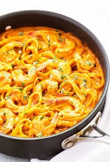

Shrimp Alfredo Pasta

Description
This creamy pasta recipe has been a favorite of many including me,
I enjoy making this and eating this alot but instead we'll add a little flare
to the well known recipe that I love shrimp alfredo. Its a well known
famous pasta at home and is definitely requested more than the number of times I can count.
With hints of pan stir fried tomatoes and onions with some spices,
we can give our pasta an exciting taste.
Without further ado lets get into our recipe!
Ingredients
- 1 pasta of your brand choice.
- 5 roma tomatoes.
- 1 onion
- Salt
- Knorr chicken Seasoning
- Black Pepper
- Powdered garlic
- Cameroon Pepper
- Fresh Shrimp
- A can of tomato paste
- 1 full size heavy cream
- Grated parmesan cheese
- avocado oil /or oil of preference
Steps
- Chop and dice tomatoes and onions into nice cubed shapes.
- Put about 10 cups of water for boiling the pasta.Spray some oil or butter to prevent pasta from sticking together. Leave until boiling hot, then pour pasta in the water.
- Prepare a pan to stir fry the diced tomatoes and onions while the pasta boils.
- Open up your tomato paste can and lay aside.
- Stir fry your tomatoes and onions for about 8 minutes.
- Add your salt, Knorr chicken seasoning, black pepper, powdered garlic, pepper of choice, and a 1/4 cup of tomato paste to the stir fry to give taste and lay aside.
- Stir fry your shrimp with salt and black pepper or any seasoning of choice and lay aside.
- Once pasta is boiled drain and set aside.
- In a clear pot on low heat pour all your heavy cream inside and stir slowly until its warm enough.
- Slowly add the grated parmesan cheese until it completely melts into the mixture.
- Slowly add your stir fried tomato mixture and shrimp to the cream to give it its creamy red texture.
- Finally add your boiled pasta and allow to simmer for 5 minutes and food is ready to be served.